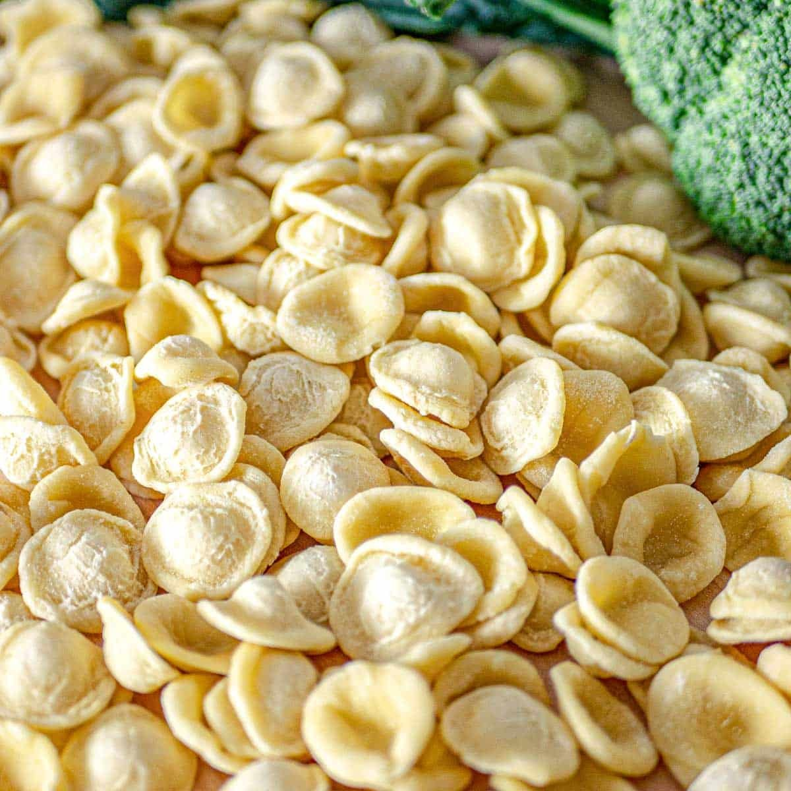

A Tour of Pasta Varieties
Pasta comes in hundreds of shapes, each crafted with purpose—whether to soak up sauces, hold fillings, or make your plate look like a work of art. Here are some classic favorites you’re bound to love:
- Long, thin, and classic. Spaghetti is a global icon of pasta, perfect for tomato-based sauces like marinara or meat sauce. It’s also the go-to noodle for dishes like carbonara and aglio e olio. Simple, yet endlessly satisfying.
-
Flat and thick ribbons that shine in creamy, rich sauces. Fettuccine Alfredo is a timeless
pairing,
but this pasta also holds up beautifully with mushroom sauces or slow-cooked ragu.
Make Your Own Fettuccine At Home! - Short tubes with angled ends, penne is ideal for holding thick sauces inside and out. It’s great in baked dishes like penne al forno, or tossed with chunky veggie or meat sauces.
Spaghetti
Fettuccine
Penne
Farfalle
- Often called “bow-tie” pasta, farfalle adds a playful touch to your plate. Its pinched center makes it perfect for catching lighter cream sauces, pesto, or even cold pasta salads.
- A staple of comfort food, these small, curved tubes are best known for mac and cheese. But macaroni can also shine in soups, casseroles, and quick skillet meals.
Macaroni
Bonus Shapes to Explore
Rigatoni
- Large tubes with ridges that cling to sauces like a dream.
- Rice-shaped pasta, perfect in broths or fresh herb salads.
- Wide, flat sheets used in the ultimate layered comfort food.
Orzo
Lasagna
Orecchiette
- “Little ears” that cradle sauces and veggies in every bite.
Make Orecchiette For Dinner Night! - Stuffed pastas filled with cheese, meat, or vegetables—tiny pockets of joy.
Tortellini & Ravioli
There’s a pasta for every mood, meal, and moment. Try something new and let the shape inspire your next creation.